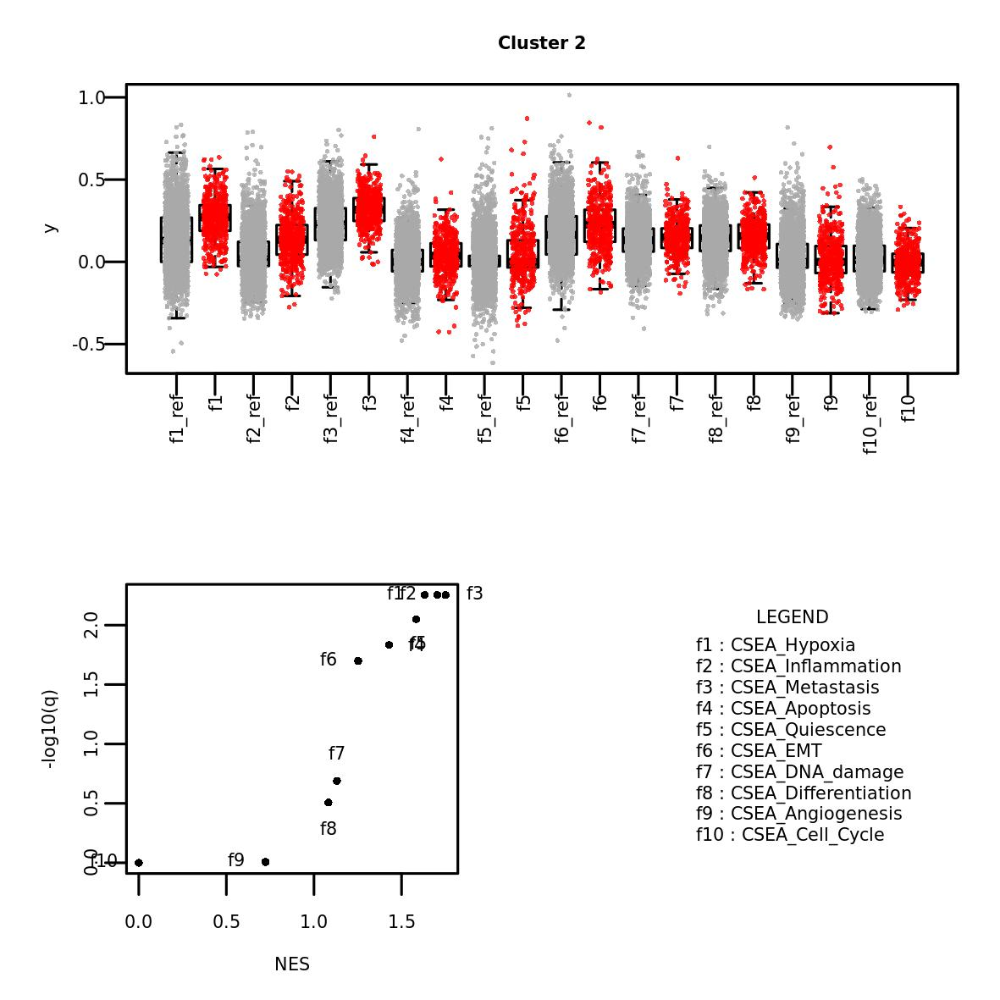

scMuffin package vignettes
scMuffin.RmdGetting started

Installation
scMuffin requires R >= 4.0.0, due to some of its dependencies, like Seurat (Hao et al. 2021). R can be installed from CRAN at the URL https://cran.r-project.org/index.html.
To succesfully install scMuffin you need some packages from Bioconductor (https://bioconductor.org) and github (https://github.com/). These packages can be installed using the following commands:
if (!require("BiocManager", quietly = TRUE)){
install.packages("BiocManager")
}
BiocManager::install(c("BiocStyle", "ComplexHeatmap", "DESeq2", "org.Hs.eg.db"))
if (!require("devtools", quietly = TRUE)){
install.packages("devtools")
}
devtools::install_github("theislab/destiny")The other dependencies, if missing, should be automatically installed using the following command:
devtools::install_github("emosca-cnr/scMuffin", build_vignettes = TRUE)To load the package:
library(scMuffin)Input
scMuffin is intended to be used downstream general purpose tasks like quality control, normalization, cell clustering and dataset integration, for which there are dedicated tools, such as Seurat (Hao et al. 2021). scMuffin requires three inputs:
- genes-by-cells raw counts matrix;
- genes-by-cells normalized expression matrix;
- a partition of cells (cell clusters).
Typically, the two genes-by-cells matrices have already been filtered to exclude low quality cells and genes that could negatively affect the analyses. However, the characterization of cells that can be achieved with scMuffin offers insights that can be used to (further) filter a dataset and/or to decide on which cells apply particular analyses (e.g. biomarker identification). In general, according to research questions and experimental design one may want to apply strong or mild filters before using scMuffin.
Obtaining the data used in this vignette
To run the examples included in this vignette you need the following data:
- two single cell datasets with counts as well as normalized expression values;
- cell clusters;
- UMAP visualization;
- cluster markers.
Here’s an example of how these data can be obtained from a publicly available study on High-Grade Glioma (J. Yuan et al. 2018) (GSE103224):
- download the filtered genes-by-cells mtrices from the URLs:
- sample PJ016: https://www.ncbi.nlm.nih.gov/geo/query/acc.cgi?acc=GSM2758471;
- sample PJ017: https://www.ncbi.nlm.nih.gov/geo/query/acc.cgi?acc=GSM2758472.
- read the text files into R and use the Seurat package (Hao et al. 2021) to perform a series of typical tasks (e.g. normalization, clustering); here’s a concise example using sample PJ016:
gbc_counts <- read.table("GSM2758471_PJ016.filtered.matrix.txt")
sym <- gbc_counts[, "V2"]
gbc_counts[, "V2"] <- NULL
gbc_counts <- keep_strongest_representative(gbc_counts, sym)
seu_obj_1 <- CreateSeuratObject(count=gbc_counts, project="PJ016")
seu_obj_1 <- NormalizeData(seu_obj_1)
seu_obj_1 <- FindVariableFeatures(seu_obj_1)
seu_obj_1 <- ScaleData(seu_obj_1)
seu_obj_1 <- RunPCA(seu_obj_1)
seu_obj_1 <- FindNeighbors(seu_obj_1)
seu_obj_1 <- FindClusters(seu_obj_1)
seu_obj_1 <- RunUMAP(seu_obj_1)The genes-by-cells count matrix available at NCBI GEO is provided with Ensembl identifiers and gene symbols, which are not unique. So, after having read the table, we take advantage of the function keep_strongest_representative, which defines a genes-by-cells matrix with symbols as row names. In case of multiple Ensembl ids mapped to the same symbol, the row with the highest average count is kept as representative of the gene. In a real scenario, the functions listed above should be run using appropriate parameters that take into account the specificities of the dataset under consideration and the objectives of the analysis that one wants to perform. Here we just wanted to provide a means to obtain a dataset to follow this vignette. Please read the Seurat documentation for further details about the functions listed above.
The scMuffinList data structure
All data and results of scMuffin are stored in the scMuffinList, so that every function takes in input such structure and returns a modified version of it. The scMuffinList can be created as follows:
scMuffinList_demo <- create_scMuffinList(counts=GetAssayData(seu_obj_1, assay="RNA", slot="counts"), normalized=GetAssayData(seu_obj_1, assay="RNA", slot="data"))Many analyses require cell clusters. Any partition can be added as follows:
scMuffinList_demo <- add_partitions(scMuffinList_demo, clusters = seu_obj_1$seurat_clusters, partition_id = "global_expr")where seu_obj_1$seurat_clusters is a named vector that contains cells clusters and whose names are cell labels.
head(scMuffinList_demo$partitions[, 2, drop=F])## CNV
## V3 0
## V4 0
## V5 2
## V6 0
## V7 2
## V8 1Gene set scoring
scMuffin provides functions to set up one or more collections of gene sets and perform cell-level estimation of gene set expression in relation to an empirical null model. This can be applied to any gene set, and can therefore be used to estimate various cell’s phenotypes, like pathway activities or marker set expression.
Assembling input gene sets
The function prepare_gsls retrieves gene sets from CellMarker [Zhang2019], PanglaoDB (Franzén, Gan, and Björkegren 2019), CancerSEA (H. Yuan et al. 2019) and MSigDB (Subramanian et al. 2005), and accepts custom gene set as well. The full list of gene sets available whitin CellMarker, PanglaoDB and CancerSEA collections can be listed using:
while in the case of MSigDB we can use its dedicated functions:
msigdbr::msigdbr_collections()
msigdbr::msigdbr_species()The gene sets of interest can be selected acting on the corresponding arguments CM_tissues, PNDB_tissues, and msigdb_hs_cat_subcat. In the case of CellMarker and PanglaoDB we can specify a list of desired tissues. The full set can be listed by means of show_tissues. Here we show just the first part of the output:
head(show_tissues())Here is an example:
gsc <- prepare_gsls(gs_sources = c("CancerSEA", "PNDB"), PNDB_tissues = c("Brain"), scMuffinList = scMuffinList_demo, genes_min = 3)Note that in the case of MSigDB we have to set up a data.frame to specify species, category and sub_category of the gene set collections.
Calculate Gene set scores at cell and cluster level
In the following example, we estimate the scores for CancerSEA gene sets:
scMuffinList_demo <- calculate_gs_scores(scMuffinList = scMuffinList_demo, gs_list = gsc$CancerSEA)The results of any analysis are stored as elements of the scMuffinList. The gene set scoring engine stores its results in scMuffinList$gene_set_scoring, where summary is a cells-by-features data.frame with cell scores, and full contains a series of additional details for every gene set:
head(scMuffinList_demo$gene_set_scoring$summary)## CSEA_Angiogenesis CSEA_Apoptosis CSEA_Cell_Cycle CSEA_Differentiation
## V3 -0.08918562 0.04322924 0.17300016 0.2360843
## V4 -0.01725770 0.10940020 0.28114799 0.2767576
## V5 0.11402356 0.05401112 -0.02053489 0.1757745
## V6 -0.06014349 0.02707061 0.37283078 0.2492808
## V7 0.10562932 0.24878223 -0.08555433 0.1855214
## V8 0.16643327 0.27654624 -0.08090808 0.1075169
## CSEA_DNA_damage
## V3 0.13994803
## V4 0.31254961
## V5 0.16894379
## V6 0.18368743
## V7 0.03395132
## V8 0.11673244
head(scMuffinList_demo$gene_set_scoring$full$CSEA_Angiogenesis)## case case.N case.AV nmark_min avg_control control.AV null_ok
## V3 0.5958431 71 22 TRUE 0.6850288 99 TRUE
## V4 0.6793401 71 22 TRUE 0.6965978 100 TRUE
## V5 0.8097307 71 24 TRUE 0.6957071 99 TRUE
## V6 0.6537237 71 16 TRUE 0.7138672 99 TRUE
## V7 0.8049070 71 24 TRUE 0.6992777 99 TRUE
## V8 0.8873211 71 19 TRUE 0.7208879 100 TRUE
## avg_delta_score delta_score
## V3 -0.08918562 -0.08918562
## V4 -0.01725770 -0.01725770
## V5 0.11402356 0.11402356
## V6 -0.06014349 -0.06014349
## V7 0.10562932 0.10562932
## V8 0.16643327 0.16643327The function calculate_gs_scores_in_clusters defines the median values of gene set scores in every cluster of a given partition id:
scMuffinList <- calculate_gs_scores_in_clusters(scMuffinList, partition_id = "global_expr")
scMuffinList_demo$cluster_data$global_expr$gene_set_scoring$summary## CSEA_Angiogenesis CSEA_Apoptosis CSEA_Cell_Cycle CSEA_Differentiation
## 0 0.03466622 0.04455260 -0.027667196 0.1546205
## 1 0.06283949 -0.05569218 0.119220367 0.1789833
## 2 0.02561436 0.06234254 -0.011424615 0.1577567
## 3 0.01546160 0.05865145 0.002646498 0.1788135
## 4 0.01048663 0.03058474 0.002924762 0.1105544
## 5 0.15187334 0.05179504 -0.001454732 0.2022856
## 6 0.04492144 -0.02827166 0.037926976 0.1453372
## 7 0.02152934 -0.06650877 0.298973763 0.2397246
## 8 0.06987440 0.04130317 -0.035846983 0.1945336
## CSEA_DNA_damage CSEA_DNA_repair CSEA_EMT CSEA_Hypoxia CSEA_Inflammation
## 0 0.06477004 -0.010409047 0.24631020 0.161630871 -0.001521447
## 1 0.14481900 0.151772082 0.10215837 0.021980962 -0.017672214
## 2 0.16351859 -0.013112346 0.24304692 0.286081417 0.151495357
## 3 0.15417556 0.002515808 0.18619531 0.295312377 0.112050700
## 4 0.13590319 0.017085982 0.24579872 0.316156629 0.087552771
## 5 0.16387229 0.008464217 0.32835167 0.284878014 0.103306520
## 6 0.21480019 0.083121431 0.11631038 0.018344308 0.062785742
## 7 0.14811608 0.143265241 0.07557108 0.008915609 0.020922322
## 8 0.25436327 0.067705312 0.14146636 -0.020107706 0.027748835
## CSEA_Invasion CSEA_Metastasis CSEA_Proliferation CSEA_Quiescence
## 0 0.1491915 0.3167512 -0.03419802 -0.04874756
## 1 0.4192880 0.1410125 0.16986820 -0.01040003
## 2 0.1947080 0.3166050 -0.02744911 0.09093454
## 3 0.2183125 0.3104895 0.01500294 0.03456636
## 4 0.1516411 0.2714825 0.08584974 0.14455138
## 5 0.2210099 0.3680268 -0.01962822 0.05680748
## 6 0.2105844 0.1090950 0.03454176 0.05277640
## 7 0.5083292 0.1830839 0.35488900 -0.04732778
## 8 0.2925115 0.1651046 0.14961468 0.13518170
## CSEA_Stemness
## 0 0.2592561
## 1 0.3960544
## 2 0.2616661
## 3 0.2791968
## 4 0.3027992
## 5 0.2357361
## 6 0.3783765
## 7 0.4564071
## 8 0.3973588These mean values are useful to obtain a concise visualization of gene set expression throughout the dataset, using the function plot_heatmap_features_by_clusters:
plot_heatmap_features_by_clusters(scMuffinList, feature_source = "gss")caption
CNV inference
CNV calculation
CNV inference is performed by the function CNV_analysis.
scMuffinList_demo <- CNV_analysis(scMuffinList_demo)The results are stored in scMuffinList_demo$CNV, where summary contains the “CNV_signal” and scMuffinList_demo$CNV$full$CNV the regions-by-cells CNV matrix; the element scMuffinList_demo$CNV$full$regions2genes is important to map the original data into the CNV regions; lastly, the scMuffinList_demo$CNV$full$detected_cnv_regions is a data.frame that list the CNV regions detected in each chromosome and cell cluster:
head(scMuffinList_demo$CNV$summary)## CNV_signal
## V3 41.61357
## V4 48.08947
## V5 39.13876
## V6 44.46613
## V7 36.90114
## V8 44.93450
head(scMuffinList_demo$CNV$full$CNV)## V3 V4 V5
## chr1__LINC00115_826205__UQCRHL_15807161 -0.09439528 -0.1298259 -0.08592605
## chr1__LINC01128_827797__FLJ37453_15834214 -0.09439528 -0.1298259 -0.08592605
## chr1__SAMD11_923922__SPEN_15847706 -0.09759899 -0.1330395 -0.08592605
## chr1__NOC2L_944202__ZBTB17_15941868 -0.09759899 -0.1254592 -0.08592605
## chr1__HES4_998963__FBXO42_16246839 -0.10080269 -0.1198235 -0.08592605
## chr1__ISG15_1013496__SZRD1_16367241 -0.10080269 -0.1174013 -0.08592605
## V6 V7 V8
## chr1__LINC00115_826205__UQCRHL_15807161 -0.07809396 -0.09126164 -0.1287080
## chr1__LINC01128_827797__FLJ37453_15834214 -0.07809396 -0.08801308 -0.1287080
## chr1__SAMD11_923922__SPEN_15847706 -0.07809396 -0.08801308 -0.1229857
## chr1__NOC2L_944202__ZBTB17_15941868 -0.07485419 -0.08801308 -0.1197168
## chr1__HES4_998963__FBXO42_16246839 -0.08053094 -0.09126164 -0.1164479
## chr1__ISG15_1013496__SZRD1_16367241 -0.07729117 -0.09126164 -0.1131790
## V9 V10 V11
## chr1__LINC00115_826205__UQCRHL_15807161 -0.1338054 -0.1115354 0.03965468
## chr1__LINC01128_827797__FLJ37453_15834214 -0.1370741 -0.1115354 0.04297391
## chr1__SAMD11_923922__SPEN_15847706 -0.1338054 -0.1082252 0.04877464
## chr1__NOC2L_944202__ZBTB17_15941868 -0.1338054 -0.1115354 0.05457536
## chr1__HES4_998963__FBXO42_16246839 -0.1338054 -0.1115354 0.05705685
## chr1__ISG15_1013496__SZRD1_16367241 -0.1338054 -0.1082252 0.06037609
## V12
## chr1__LINC00115_826205__UQCRHL_15807161 -0.08178787
## chr1__LINC01128_827797__FLJ37453_15834214 -0.08178787
## chr1__SAMD11_923922__SPEN_15847706 -0.08178787
## chr1__NOC2L_944202__ZBTB17_15941868 -0.07842147
## chr1__HES4_998963__FBXO42_16246839 -0.07842147
## chr1__ISG15_1013496__SZRD1_16367241 -0.07254742
head(scMuffinList_demo$CNV$full$regions2genes)## $chr1__LINC00115_826205__UQCRHL_15807161
## symbol location
## 11 LINC00115 826205
## 12 LINC01128 827797
## 13 SAMD11 923922
## 14 NOC2L 944202
## 15 HES4 998963
## 16 ISG15 1013496
head(scMuffinList_demo$CNV$full$detected_cnv_regions$chr1)## chr start start.loc
## 1 chr1 chr1__LINC00115_826205__UQCRHL_15807161 826205
## 2 chr1 chr1__PHF13_6613730__LYPLA2_23791144 6613730
## 3 chr1 chr1__CAMTA1_6785323__FUCA1_23845080 6785323
## 4 chr1 chr1__HIPK1_113953876__CHTOP_153633981 113953876
## 5 chr1 chr1__CD58_116514533__RAB13_153981604 116514533
## 6 chr1 chr1__S100A2_153561108__DEDD_161120977 153561108
## stop stop.loc cluster length
## 1 chr1__KLHL21_6590723__PITHD1_23778417 23778417 0 22952212
## 2 chr1__DNAJC11_6634169__HMGCL_23801876 23801876 0 17188146
## 3 chr1__TMEM201_9588910__STMN1_25900115 25900115 0 19114792
## 4 chr1__SIKE1_114769483__CRTC2_153947675 153947675 0 39993799
## 5 chr1__S100A3_153547328__NIT1_161118117 161118117 0 44603584
## 6 chr1__ILF2_153661787__ADAMTS4_161189725 161189725 0 7628617Importantly, CNV inference adds the “CNV” partition:
head(scMuffinList_demo$partitions)## global_expr CNV
## V3 1 0
## V4 1 0
## V5 5 2
## V6 1 0
## V7 5 2
## V8 5 1The calculation can be demanding. For example, it requires approximately 10 minutes on 2 cores (dual Intel(R) Xeon(R), 2.60GHz).
CNV visualization
scMuffin provides two visualizations for CNVs: an heatmap and the cluster average profile plot. The heatmap is based on ComnplexHeatmap package and beside it, it is possible to visualize the genomic location of a series of given genes (specified in the argument genes), or, alternatively, the location of detected CNVs (argument mark.detected.cnv = T)
col_fun <- circlize::colorRamp2(seq(-0.2, 0.2, length.out = 11), rev(pals::brewer.rdylbu(11)))
heatmap_CNV(scMuffinList = scMuffinList_demo, genes = c("YBX1", "HNRNPM"), genes.labels = T, col=col_fun)
heatmap_CNV(scMuffinList = scMuffinList_demo, mark.detected.cnv = T, col=col_fun)
plot_profile_CNV(scMuffinList = scMuffinList_demo, cluster = 0, cex.points = 0.5) 
To function plot_profile_CNV plots the median CNV profile of a cluster:
plot_profile_CNV(scMuffinList = scMuffinList_demo, cluster = 0, cex.points = 0.5) 
Transcriptional complexity
The transcriptional complexity can be quantified by means of the function transcr_compl. The corresponding summary element contains a data.frame with the number of cell transcripts, the number of genes detected in every cell, the TC-ratio (C), the TC-LMR (linear model residual) and the TC-H (entropy):
scMuffinList_demo <- transcr_compl(scMuffinList_demo)
head(scMuffinList_demo$transcr_compl$summary)## tot_counts n_genes C H LM
## V3 16233 1052 0.863711 6.523161 -0.02531052
## V4 14286 1168 1.089642 6.736431 0.06163495
## V5 15857 1217 1.022871 6.602594 0.04557971
## V6 15157 1208 1.062197 6.763307 0.05702736
## V7 15615 1172 1.000316 6.536441 0.03421426
## V8 15286 1218 1.061952 6.685640 0.05785375Cell proliferation rate
Cell proliferation is quantified considering the maximum between the two scores of G1/S and G2/M gene sets:
scMuffinList_demo <- proliferation_analysis(scMuffinList_demo)The proliferation score is stored in the summary element of scMuffinList_demo$proliferation:
head(scMuffinList_demo$proliferation$summary)## Proliferation_score
## V3 0.27013968
## V4 0.42946960
## V5 -0.17596045
## V6 0.40310925
## V7 -0.04090571
## V8 -0.12102751Cell state trajectories
Diffusion maps identify differentiation trajectories. scMuffin relies on the diffusion pseudo time calculation available in the R package “destiny” (Angerer et al. 2016). Here we calculate the diffusion map over the first 50 PC (to speed up computation), using a random cell to obtain diffusion pseudotimes:
scMuffinList_demo <- diff_map(scMuffinList_demo, root_cell = "random", n_pcs=50)A data.frame with the most important features of the analysis (the first two eigenvectors, pseudotime, branch information and whether a cell is a tip of the branch or not) are stored scMuffinList_demo$diffusion_map_pseudo_t$summary:
scMuffinList_demo$diffusion_map_pseudo_t$summary## DC1 DC2 dpt branch tips
## V3 0.02501839 -0.022810097 1.888927 2 FALSE
## V4 0.03166680 -0.032411924 1.967455 2 FALSE
## V5 -0.01895550 -0.010695236 1.675576 3 FALSE
## V6 0.03301277 -0.039363092 1.990567 2 FALSE
## V7 -0.01821403 -0.009274310 1.670158 3 FALSE
## V8 -0.01831355 -0.009674605 1.671976 3 FALSECluster enrichment assessment
Cell clusters can be assessed for enrichment in quantitative and categorical values. The appropriate statistical test is automatically chosen according to feature type. In this example, we assess cluster enrichment for the feature gene_set_scoring (quantitative one) for the cluster defined by the partition global_expr:
scMuffinList_demo <- assess_cluster_enrichment(scMuffinList_demo, feature_name = "gene_set_scoring", partition_id = "global_expr")In case of quantitative features the result is a list named GSEA, placed under the elements cluster_data$global_expr (partition id). The list contains the gene set table and the leading edge results. Here’s the result related to the gene set CSEA_Angiogenesis:
scMuffinList_demo$cluster_data$global_expr$GSEA$gs_table$CSEA_Angiogenesis## id es p_val adj_p_val n_pos_perm n_neg_perm nes FDRq
## 0 0 -0.1767187 0.01 0.0180000 98 2 0.0000000 1.000000000
## 1 1 0.3124272 0.02 0.0300000 100 0 1.2511556 0.098737084
## 2 2 0.1687780 1.00 1.0000000 100 0 0.6984846 0.974741676
## 3 3 -0.1578852 0.01 0.0180000 99 1 0.0000000 1.000000000
## 4 4 -0.2900841 0.01 0.0180000 97 3 0.0000000 1.000000000
## 5 5 0.5501378 0.01 0.0180000 98 2 2.1523242 0.006888634
## 6 6 0.3163922 0.10 0.1285714 97 3 1.2295078 0.106773823
## 7 7 0.2876240 0.24 0.2700000 96 4 1.1208356 0.234213548
## 8 8 0.4906238 0.01 0.0180000 86 14 1.7152713 0.006888634In this this example we assess cluster enrichment in relation to categorical feature, namely cell cycle phase:
scMuffinList_demo <- assess_cluster_enrichment(scMuffinList_demo, feature_name = "CC_Phase", partition_id = "global_expr")As for categorical features the result is a list named ORA, placed under the elements cluster_data$global_expr (partition id). The list contains ORA results for every categorical value. Here’s the enrichment of clusters in terms of cells with value “G1”:
scMuffinList_demo$cluster_data$global_expr$ORA$CC_Phase$G1## id N wb bb bd wbd exp er p p_adj
## 0 0 2828 2049 779 583 399 422.40700 0.9445866 9.931667e-01 1.000000e+00
## 1 1 2828 2049 779 502 0 363.71924 0.0000000 1.000000e+00 1.000000e+00
## 2 2 2828 2049 779 474 441 343.43211 1.2840966 3.156377e-34 1.420369e-33
## 3 3 2828 2049 779 446 431 323.14498 1.3337667 5.121689e-47 4.609520e-46
## 4 4 2828 2049 779 330 273 239.09830 1.1417898 2.642676e-06 5.946021e-06
## 5 5 2828 2049 779 262 250 189.82956 1.3169709 1.192875e-23 3.578624e-23
## 6 6 2828 2049 779 220 165 159.39887 1.0351391 2.124319e-01 3.823774e-01
## 7 7 2828 2049 779 138 0 99.98656 0.0000000 1.000000e+00 1.000000e+00
## 8 8 2828 2049 779 130 90 94.19024 0.9555130 8.275204e-01 1.000000e+00The enrichment analysis results appearing in these tables can be easily extracted and organized in a clusters-by-values table by means of extract_cluster_enrichment_table. For instance, here we extract GSEA NES and FDRq values, and ORA er (enrichment ratio) values:
gsea_fdr_table <- extract_cluster_enrichment_table(scMuffinList_demo, partition_id = "global_expr", type = "GSEA", quantity = "FDRq")
gsea_nes_table <- extract_cluster_enrichment_table(scMuffinList_demo, partition_id = "global_expr", type = "GSEA", quantity = "nes")
ora_p_table <- extract_cluster_enrichment_table(scMuffinList_demo, partition_id = "global_expr", type = "ORA", quantity = "p")
gsea_fdr_table## CSEA_Angiogenesis CSEA_Apoptosis CSEA_Cell_Cycle CSEA_Differentiation
## 0 1.000000000 0.091711957 1.000000000 1.000000000
## 1 0.098737084 0.018292683 0.004608295 0.046718576
## 2 0.974741676 0.008152174 1.000000000 0.266963293
## 3 1.000000000 0.008152174 1.000000000 0.354467927
## 4 1.000000000 0.831521739 1.000000000 0.997775306
## 5 0.006888634 0.008152174 1.000000000 0.044493882
## 6 0.106773823 0.018292683 0.231950845 0.845383760
## 7 0.234213548 0.018292683 0.004608295 0.008898776
## 8 0.006888634 0.813858696 1.000000000 0.008898776
## CSEA_DNA_damage CSEA_DNA_repair CSEA_EMT CSEA_Hypoxia CSEA_Inflammation
## 0 1.000000000 1.000000000 0.059325176 0.998883929 1.000000000
## 1 0.306117909 0.005643341 1.000000000 1.000000000 1.000000000
## 2 0.171301446 1.000000000 0.017797553 0.005580357 0.005586592
## 3 1.000000000 1.000000000 1.000000000 0.005580357 0.013966480
## 4 0.332220986 0.996613995 1.000000000 0.005580357 0.055865922
## 5 0.979977753 1.000000000 0.008898776 0.005580357 0.101955307
## 6 0.008898776 0.005643341 1.000000000 1.000000000 0.982122905
## 7 0.038561364 0.005643341 1.000000000 1.000000000 1.000000000
## 8 0.008898776 0.007054176 1.000000000 1.000000000 1.000000000
## CSEA_Invasion CSEA_Metastasis CSEA_Proliferation CSEA_Quiescence
## 0 1.000000000 0.172991071 1.000000000 1.000000000
## 1 0.008898776 1.000000000 0.005592841 1.000000000
## 2 1.000000000 0.005580357 1.000000000 0.014833127
## 3 1.000000000 0.005580357 1.000000000 1.000000000
## 4 1.000000000 0.952008929 0.011185682 0.004944376
## 5 1.000000000 0.005580357 1.000000000 0.627935723
## 6 0.280311457 1.000000000 0.856823266 0.020408163
## 7 0.008898776 1.000000000 0.005592841 1.000000000
## 8 0.038561364 1.000000000 0.267058166 0.613102596
## CSEA_Stemness
## 0 1.00000000
## 1 0.00779510
## 2 1.00000000
## 3 1.00000000
## 4 0.00935412
## 5 1.00000000
## 6 0.00779510
## 7 0.00779510
## 8 0.00779510These tables can be plotted with the function plot_heatmap_features_by_clusters. In the following example we plot NES values with a asterisks according to their significance:
plot_heatmap_features_by_clusters(feature_source = gsea_nes_table, significance_matrix = gsea_fdr_table, sig_threshold = 0.05)Similarly, it’s possible to extract the most significant “tags” of any clusters; for example, here we extract the top 3 tags by FDRq (GSEA) and p_adj (ORA):
scMuffinList_demo <- extract_cluster_enrichment_tags(scMuffinList_demo, partition_id = "global_expr", n_max_per_cluster = 3, GSEA_selection_criterion="FDRq", only_pos_nes = TRUE, GSEA_selection_threshold = 0.05, ORA_selection_criterion = "p_adj", ORA_selection_threshold = 0.25)The results are placed under the cluster_tags element:
head(scMuffinList_demo$cluster_data$global_expr$cluster_tags$GSEA)## $`0`
## [1] "CSEA_Apoptosis" "CSEA_EMT" "CSEA_Metastasis"
##
## $`1`
## [1] "CSEA_DNA_repair" "CSEA_Cell_Cycle" "CSEA_Invasion"
##
## $`2`
## [1] "CSEA_Metastasis" "CSEA_Inflammation" "CSEA_Hypoxia"
##
## $`3`
## [1] "CSEA_Apoptosis" "CSEA_Metastasis" "CSEA_Hypoxia"
##
## $`4`
## [1] "CSEA_Quiescence" "CSEA_Hypoxia" "CSEA_Stemness"
##
## $`5`
## [1] "CSEA_Metastasis" "CSEA_Angiogenesis" "CSEA_Apoptosis"The results of cluster enrichment can be visualized by barplots and boxplots for, respectively, categorical values and quantitative values.
barplot_cluster(scMuffinList_demo, partition_id = "global_expr", feature_name = "CC_Phase", feature_id = "CC_Phase")
boxplot_cluster(scMuffinList_demo, feature_name = "gene_set_scoring", partition_id = "global_expr")
Comparison between clusters
Intra-dataset
The function overlap_matrix calculates the overlap coefficient between all-pairs of clusters of two or more partitions of the same cells (same dataset):
scMuffinList_demo <- overlap_matrix(scMuffinList_demo)The results are stored under the element `cluster_comparison```:
head(scMuffinList_demo$cluster_comparison$overlap_matrix)## CNV_0 CNV_1 CNV_2 CNV_3 global_expr_0
## CNV_0 1.00000000 0.000000000 0.000000000 0.00000000 0.01372213
## CNV_1 0.00000000 1.000000000 0.000000000 0.00000000 0.38250429
## CNV_2 0.00000000 0.000000000 1.000000000 0.00000000 0.24528302
## CNV_3 0.00000000 0.000000000 0.000000000 1.00000000 0.56948229
## global_expr_0 0.01372213 0.382504288 0.245283019 0.56948229 1.00000000
## global_expr_1 0.98007968 0.007968127 0.001992032 0.01362398 0.00000000
## global_expr_1 global_expr_2 global_expr_3 global_expr_4
## CNV_0 0.980079681 0.002109705 0.00000000 0.23030303
## CNV_1 0.007968127 0.373417722 0.36547085 0.57575758
## CNV_2 0.001992032 0.504219409 0.55829596 0.07272727
## CNV_3 0.013623978 0.155313351 0.09264305 0.12121212
## global_expr_0 0.000000000 0.000000000 0.00000000 0.00000000
## global_expr_1 1.000000000 0.000000000 0.00000000 0.00000000
## global_expr_5 global_expr_6 global_expr_7 global_expr_8
## CNV_0 0.003816794 0.963636364 0.992753623 0.953846154
## CNV_1 0.255725191 0.027272727 0.007246377 0.023076923
## CNV_2 0.671755725 0.000000000 0.000000000 0.007692308
## CNV_3 0.068702290 0.009090909 0.000000000 0.015384615
## global_expr_0 0.000000000 0.000000000 0.000000000 0.000000000
## global_expr_1 0.000000000 0.000000000 0.000000000 0.000000000Inter-dataset
Inter-dataset comparison is performed through the function inter_dataset_comparison, which require a list of Seurat objects and a gene set list. The activity of this gene set list will be assessed over the clusters of all datasets. In needed, the function prepare_cluster_markers_list provides the possibility to prepare a gene set list of cluster markers, starting
dataset_cmp_res <- inter_dataset_comparison(seu_obj_list = seu_obj_list, gsl = cluster_markers_list, genes_max = 500, genes_min = 5)
plot_heatmap_dataset_comparison(dataset_cmp_res, outfile = "vignette/heatmap_ds_cmp.png")
plot_heatmap_dataset_comparison(dataset_cmp_res, outfile = "vignette/heatmap_ds_cmp_p.png", type = "significance")

The function can be used to analyze any gene set. In the following example we assess the expression of CancerSEA gene sets across datasets:
gsl <- prepare_gsls(gs_sources = "CancerSEA", genes=unlist(lapply(seu_obj_list, rownames)))
dataset_cmp_res_cancersea <- inter_dataset_comparison(seu_obj_list = seu_obj_list, gsl = gsl$CancerSEA, genes_max = 500, genes_min = 5)
plot_heatmap_dataset_comparison(dataset_cmp_res_cancersea, outfile = "vignette/heatmap_ds_cmp_cancer.png")
caption